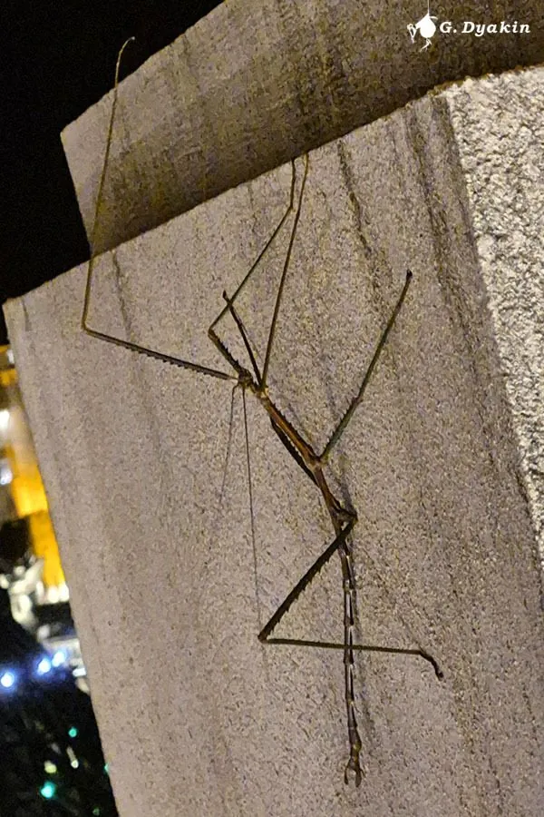

昆虫 · 动物界
中国巨竹节虫 Phryganistria chinensis

曾被报道为世界最长昆虫的竹节虫，雌性连足体长可达 60 cm，擅长拟态树枝躲避天敌，2014 年发现于广西。
- 分类
- 门节肢动物门纲昆虫纲目竹节虫目科竹节虫科属巨竹节虫属
- 栖息环境
- 广西等地的亚热带林区与喀斯特山地灌丛
- 地理分布
- 中国广西等华南地区的亚热带林区
- 保护级别
- 暂无评估；发现较晚，种群状况不明
物种志
中国巨竹节虫雌性体长（不含足）约 36 cm，连同伸长的足可达 60 cm 以上，曾被报道为世界最长昆虫；雄性体型明显较小。身体细长如枯枝，体色褐或绿褐，表面粗糙，翅已退化，足细长且带刺，静止时与树枝极难区分。
它是植食性昆虫，取食壳斗科和樟科等植物叶片，夜间活动，白天多静止在枝叶间拟态树枝，受惊时常坠落地面装死，等危险过去再爬走。雌虫把卵产在林下落叶层中，卵形似种子，卵期约 4–6 个月，若虫孵化后经多次蜕皮逐渐长大。中国巨竹节虫是 2014 年发表的新种，已知分布在中国广西等地的亚热带林区，由于发现较晚、野外记录很少，其种群状况和受威胁程度尚不清楚。
形态与习性
- 食性取食壳斗科和樟科等植物叶片
- 体长雌性不含足约 36 cm，连足可达 60 cm 以上
- 生活史卵期约 4–6 个月，若虫多次蜕皮后成熟
- 拟态身体和足形似枯枝，静止时难以被发现
- 习性夜行性，白天多停在枝叶间
- 纪录曾是已知体长最长的昆虫之一
趣味知识
- 2014 年发表时，中国巨竹节虫被视为世界上最长的昆虫之一。
- 它的体长纪录靠伸长的足实现，单看身体约 36 cm。
- 竹节虫受惊时常坠落地面装死，等危险过去再爬走。